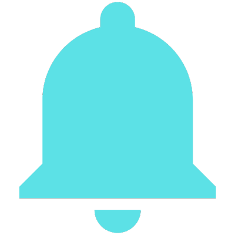

<ion-toolbar>
  <ion-title id="toolbarTitle">RECORRIDO</ion-title>
  <ion-buttons id="notifButtons" slot="end">
    <ion-button class="notificaciones">
      </ion-button>
  </ion-buttons>
</ion-toolbar>

<ion-content>
  <div class="NR-infoCampana">
    <ion-text class="white-text">Recorriendo para: {{campana.nombre_campana}}</ion-text>
    <!-- <ion-text class="white-text" color="warning" *ngIf="mensajeGPS"><br>Active su GPS </ion-text> -->
  </div>

  <div id="newRecorridoMapa">
    <div id="nuevo-recorrido" style="float:left;width:100%;height:100%"></div>
  </div>

  <div class="NR-info-container">
    <div class="NR-divider">
      <ion-text class="black-text">Iniciado en:</ion-text>
      <ion-text class="black-text">{{fechaInicio}}</ion-text>
    </div>
    <div class="NR-divider">
      <ion-text class="black-text">Kilómetros recorridos:</ion-text>
      <ion-text class="black-text">{{kms}} KM</ion-text>
    </div>
    <div class="NR-divider">
      <ion-text class="black-text">Recaudación actual</ion-text>
      <ion-text class="black-text">${{dineroRecaudado}}</ion-text>
    </div>
    <div class="NR-divider">
      <ion-text class="black-text">Tiempo transcurrido</ion-text>
      <ion-text class="black-text">{{currentTime.h}}:{{currentTime.m}}:{{currentTime.s}}</ion-text>
    </div>
  </div>

  <div class="NR-button-container">
    <ion-button (click)="finalizarRecorrido()"> Finalizar Recorrido</ion-button>
  </div>
</ion-content>
